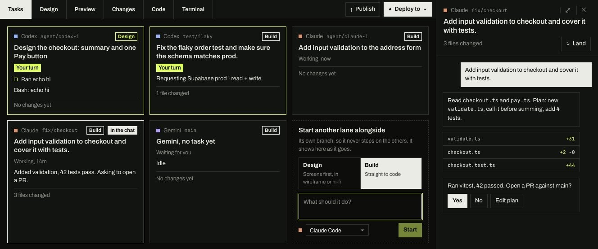

Your first task
Ask an agent for a change, watch it work on its own branch, review what it did, and land it on main. About ten minutes, with an agent you already use.
Before you start
- Styx is installed, and you've added at least one project.
- One agent CLI is installed and signed in, for example
claudeorcodex. Styx uses your existing subscription; there are no API keys to paste.
Not sure your agent is ready? Settings › Agent connections shows every CLI Styx found, its version and whether it's signed in.
Start a task
- Open your project and choose New task.
In the project nav, select + New task, or press ⌘ ⇧ N (Ctrl Shift N on Windows and Linux).
- Say what you want, and pick the agent.
Choose Build to go straight to code, describe the change in a sentence, pick your agent and select Start. Styx creates a branch,
agent/claude-1, in its own copy of the repo, so nothing touches your working tree.
Every task is a card on the Tasks board. Yours is the lime one.Tasks - Answer when it asks.
When the agent needs you, its card says Your turn and the Dock icon shows a badge. Plans, questions and access requests all appear in the chat, and you answer them there.
Review what it did
Open Changes to read the task's work turn by turn, each turn with its diff.
- Undo this turn puts the files back exactly as they were before that turn.
- Revert on a single change drops just that hunk.
- Or tell the agent what to change, in the chat.
Building UI? Preview runs your app inside Styx. Use Select to fix, click what's wrong and say why: the agent gets the element and a picture of it.
Land it on main
When you're happy, select Land. Styx commits the task, brings main in, runs your project's checks and merges it, so main never gets a change that fails them. Prefer a pull request? Publish pushes the branch and opens one.
# the first time, the agent works out your checks and Styx remembers them (checksCommand)
pnpm typecheck && pnpm test
Where to go next
- Connect a target, so an agent can ask to deploy or touch a database.
- Run two agents on one feature, side by side, without them stepping on each other.